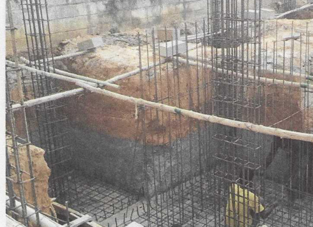
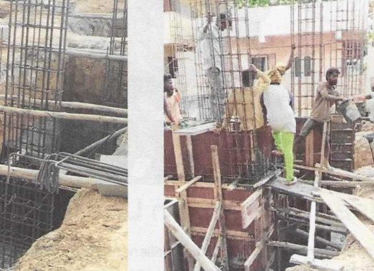

Support the Blessing Home
Help Us Build a Home
With a heavy heart and unwavering faith, we reach out about a pressing need. For the past 23 years we have lived in rented houses, moving from one place to another whenever house owners needed their property back, and we still need a lasting shelter for these 22 children.
Finding a house to rent for Homes has become increasingly difficult in India. Strict government regulations, heavy taxes, and other legal requirements have made many property owners hesitant to lease their buildings for such purposes. This has made the need for a permanent building of our own even clearer — a place where these 22 orphaned and abandoned children can feel secure, nurtured, and loved without the constant fear of being uprooted again.


By God’s grace, and with the support of several kind friends, we have purchased a piece of land and begun the foundation work for a home where these children can live safely and experience love and care. We do not yet have the funds to take this project to the next level. The estimated cost to build the home is ₹1.5 crore. Without further support, the dream of a secure and loving home remains incomplete.
Time is short, but we believe in God’s perfect plan. Every contribution, no matter the size, will make a profound difference. If you would like to know more about the project, please reach Prema Devanandam at blessinghome2003@gmail.com or 97413 79444 / 76194 22426.
Financial Support: We greatly appreciate any and all donations towards Blessing Home. Unfortunately, at this time we are unable to receive donations through this website. If you would like to support us financially — for the building, school fees, or daily needs — contact us for bank details to initiate a wire transfer (domestically or internationally). Thank you!
Prayer: The greatest way you can support the Blessing Home is by appealing to our Heavenly Father in prayer. See our prayer page for updated specific prayer requests.
Volunteer Opportunities: Office help is needed. We also welcome volunteers to help tutor, mentor, and entertain the children.
School Fees and Sponsorship: Paying fees at the start of each academic year is a major need. Blessing Home also supports children in Bangalore and KGF through school fees and monthly provisions. We welcome sponsors for children’s education and higher studies. Donations are tax-exempted under Section 80-G of the Income Tax Act.